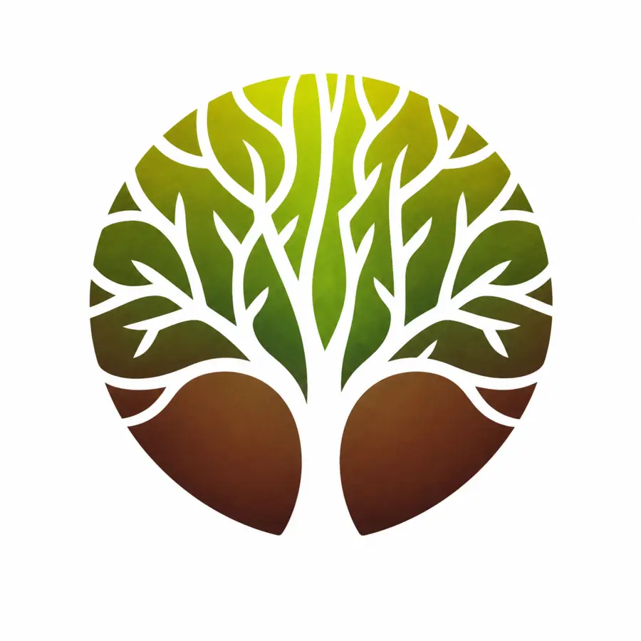
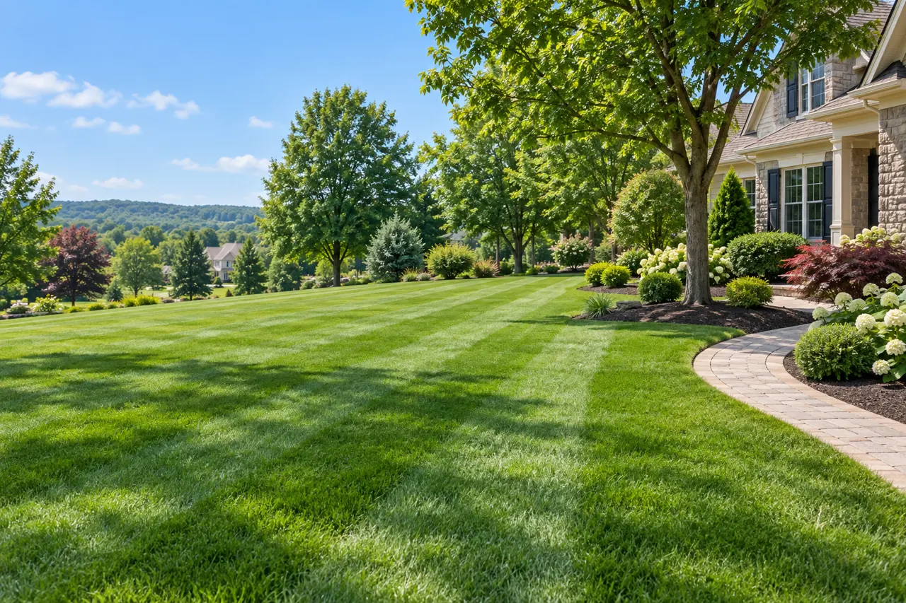

Mowing
An even cut planned around your lawn and current growing conditions.

C&G ServicesProfessional mowing, trimming and edging for homes and businesses in Quakertown, Doylestown and Bucks County.
Tell C&G Landscaping Services where your property is located and what you need. We will discuss the scope, availability and a free estimate before work begins.
Our family-owned team serves Bucks County and nearby communities in Montgomery and Lehigh counties.

An even cut planned around your lawn and current growing conditions.
Care around planting beds, walkways and driveways for a tidy finish.
Clearing grass clippings from paved areas after mowing.
Contact us to confirm service at your address in Quakertown, Doylestown, Bucks County, Montgomery County or Lehigh County.
Tell us whether you need recurring care or a one-time visit. We will discuss a schedule based on your lawn and availability.
Lawn size, access, terrain, grass height and the requested frequency help determine the quote.
Share your location and project details. We will follow up to discuss your property and service availability.